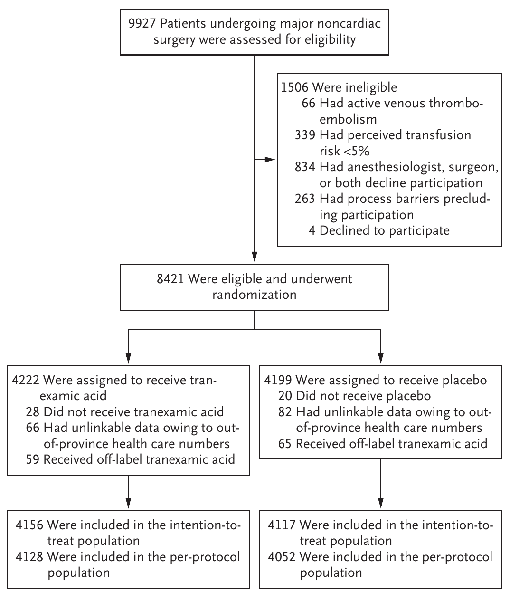
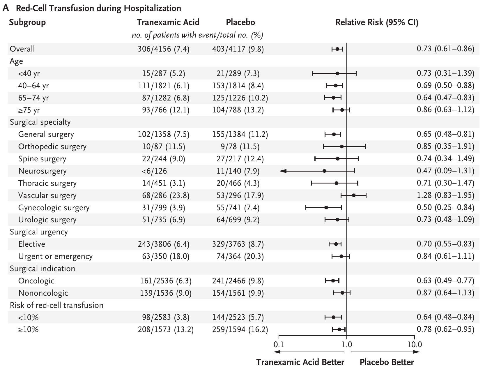
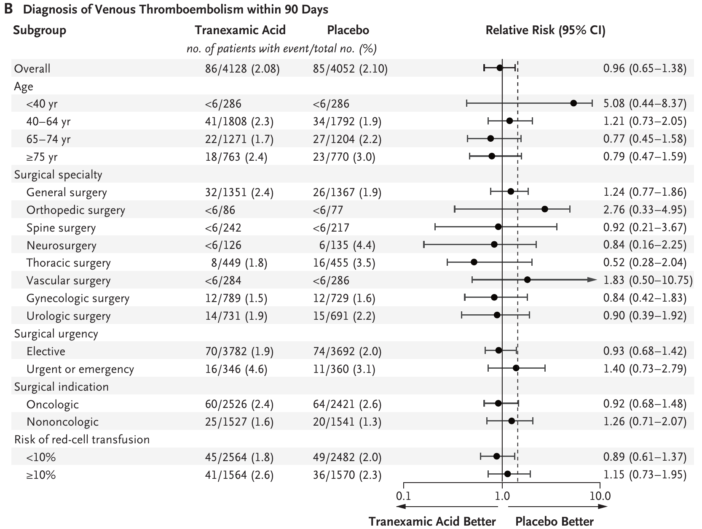

#6 HEMATOLOGICAL SYSTEM / 輸血
| TXA | Tranexamic Acid — トラネキサム酸（抗線溶薬） |
| VTE | Venous Thromboembolism — 静脈血栓塞栓症（深部静脈血栓症＋肺塞栓症） |
| DVT | Deep-Vein Thrombosis — 深部静脈血栓症 |
| PE | Pulmonary Embolism — 肺塞栓症 |
| ITT | Intention-to-Treat — 治療企図（無作為化された全例での解析） |
| per-protocol | プロトコル遵守集団（割付通りに治療を受けた例での解析） |
| RR | Relative Risk — 相対リスク |
| HR | Hazard Ratio — ハザード比 |
| CI | Confidence Interval — 信頼区間 |
| NNT | Number Needed to Treat — 必要治療数（1イベントを防ぐのに治療すべき人数） |
| pp | percentage point — パーセントポイント（絶対差） |
| IQR | Interquartile Range — 四分位範囲 |
| MI | Myocardial Infarction — 心筋梗塞 |
| ICU | Intensive Care Unit — 集中治療室 |
| RCT | Randomized Controlled Trial — 無作為化比較試験 |
| POISE-3 | 非心臓手術患者でTXAを評価した先行RCT（本文比較対象） |
周術期出血は入院患者の赤血球輸血の主要な適応である。需要の増加と献血者プールの縮小により血液製剤の供給は逼迫しており、輸血需要を減らす戦略が求められている。トラネキサム酸（TXA）は安価で広く利用できる抗線溶薬で、心臓手術や整形外科手術では出血と赤血球輸血の発生を減らすことが示されてきた。
一方、非心臓手術での位置づけは不確実だった。出血・心血管リスクの高い非心臓手術患者を対象としたPOISE-3試験では、30日時点の生命を脅かす出血・大出血・重要臓器への出血の複合がTXAでプラセボより有意に低かった。しかし主要安全性アウトカムである30日の主要心血管合併症については非劣性が確立されなかった。とりわけ癌などの血栓傾向をもつ患者での血栓合併症への懸念から、TXAの導入は施設間・施設内でばらついていた。
本試験（TRACTION）の問い：非心臓大手術での病院全体のトラネキサム酸投与方針が、臨床的に重要なVTE（静脈血栓塞栓症）の増加なしに赤血球輸血の発生を減らせるか。
TRACTIONは、多施設・二重盲検・プラセボ対照のクラスター・クロスオーバー試験である。カナダの10病院（クラスター）を、4週間ごとに「トラネキサム酸方針」か「プラセボ方針」へ1:1で無作為に割り付けた。各施設は割り付けられた方針に従い、輸血リスクの高い手術患者を管理した。患者は2022年2月から2024年3月にかけて、連続する25の4週間期間で登録された。
プラセボは0.9%生理食塩水で、患者・医療者・研究スタッフ・研究者・試験統計担当者は割付スキームと投与された治験薬を知らされなかった。生命を脅かす出血でTXA投与の確認が必要と外科チームが判断した場合に備え、施設の割付と反対の薬剤を含む盲検下の緊急治験薬が用意され、クラスター設計のもとで緊急開鍵を不要にした。アウトカムは検証済みの臨床・行政データから中央で電子的に取得された。
対象は18歳以上で、非心臓大手術を受ける患者。ここでの「大手術」とは、赤血球輸血の推定リスクが5%以上の入院手術と定義され、おおむね予定3時間以上の開腹手術または腹腔鏡手術が含まれた。出血リスクの推定は、参加4施設で実施された約75,000件の手術の観察研究に基づく。
除外基準：活動性血栓塞栓症、心臓手術および股・膝の人工関節全置換術（TXA投与が標準のため）、遊離皮弁を伴う手術、直近3時間以内にTXAが投与された外傷手術、妊娠。
参加施設は、手術患者に対しトラネキサム酸かプラセボ（0.9%生理食塩水）を、4週ごと1:1で割り付けられた方針に従って投与した。トラネキサム酸は手術開始時に1gを静注ボーラス（体重100kg超は2gボーラス）し、閉創前にさらに1gを追加した（追加用量のタイミングは麻酔科医の裁量）。この用量レジメンは実臨床の使用を反映し、薬物動態研究に裏づけられている。細胞回収・局所TXA・術中血栓予防などの併用介入は記録されたがプロトコル化されなかった。
共主要アウトカムは、有効性＝入院中の赤血球輸血と、安全性＝術後90日以内のVTE（深部静脈血栓症または肺塞栓症）の診断である。安全性は非劣性で評価され、事前規定の非劣性マージンは相対リスクの95%信頼区間の上限1.46とした（ベースライン発生率2.2%を前提とした90日VTEの1パーセントポイント差に相当）。両方の共主要アウトカムを満たして初めて「病院方針としてのTXAが有益」と判定する設計のため、多重性の調整は不要とされた。主要有効性解析はITT集団で、非劣性解析はper-protocol（主）とITTの両集団で行われた。
9927例の適格性評価から8421例が無作為化され、データ連結が成立した8273例（98.2%）が主要ITT集団となった。per-protocol集団は8180例（98.9%）。オープンラベルのTXA使用は1.5%（124例）と稀で、盲検下の緊急治験薬の使用は4.0%（334例）だった。

2群間で患者背景はおおむね均等だった。登録手術の60.5%（5002例）が癌に対する手術で、診療科別では一般外科・婦人科・泌尿器科が多くを占めた。数値はすべて原著記載値。
| 年齢中央値 | 64歳（IQR 54–72） | 男性 | 47.1% |
| 体重中央値 | 80 kg | 癌に対する手術 | 60.5%（5002） |
| 術前ヘモグロビン中央値 | 13.4 g/dL | 一般外科 | 33.1%（2742） |
| 婦人科 | 18.6%（1540） | 泌尿器科 | 17.3%（1434） |
| 血管外科 | 7.0%（582） | 脊椎 | 5.6%（461） |
入院中に赤血球輸血を受けた患者の割合は、トラネキサム酸群で7.4%（306/4156）、プラセボ群で9.8%（403/4117）だった（相対リスク0.73、95%CI 0.61–0.86、調整絶対差 −2.7パーセントポイント、95%CI −4.2 〜 −1.4、必要治療数37例）。この効果は、time-to-event解析で追跡期間の差の影響を受けなかった。
入院中の赤血球輸血に対するトラネキサム酸の相対リスク（ITT集団）。全体で0.73（95%CI 0.61–0.86）であり、年齢・診療科・術式・癌の有無・輸血リスクのいずれのサブグループでも、おおむね一貫してプラセボより低かった。

輸血量はトラネキサム酸群で少なく、心筋梗塞・脳卒中・肺塞栓症・ICU入室・生存は両群で同等だった。副次アウトカムの信頼区間は多重性を調整しておらず、確定的な治療効果の推定には用いない。
| 副次アウトカム | TXA（N=4156） | プラセボ（N=4117） | 効果推定値（95%CI） |
|---|---|---|---|
| 赤血球輸血量 100例あたり単位・患者レベル | 24.7±3.6 | 34.2±2.6 | −9.5（−19.2 〜 −0.2） |
| 心筋梗塞 | 0.7%（29） | 0.8%（34） | — |
| 脳卒中 | 0.2%（9） | 0.2%（9） | — |
| 肺塞栓症 | 0.2%（8） | 0.1%（6） | — |
| ICU入室 | 16.7%（693） | 17.5%（721） | −0.01（−0.03 〜 0.02） |
| 入院期間（日） | 6.20±8.89 | 6.26±9.42 | −0.15（−0.69 〜 0.29） |
| 90日全生存 | 97.8%（4066） | 97.6%（4017） | HR 0.95（0.71–1.28） |
術後90日以内にVTEと診断された患者の割合は、トラネキサム酸群で2.1%（86/4128）、プラセボ群で2.1%（85/4052）だった（相対リスク0.96、95%CI 0.65–1.38）。95%信頼区間の上限は1.38で、事前規定の非劣性マージン1.46を下回り、per-protocol集団で非劣性の基準を満たした。ITT集団では2.1%（86/4156）対2.2%（90/4117）、相対リスク0.92（95%CI 0.62–1.30）だった。
| 90日VTE | TXA | プラセボ | 相対リスク（95%CI） |
|---|---|---|---|
| per-protocol（主解析） | 2.1%（86/4128） | 2.1%（85/4052） | 0.96（0.65–1.38） |
| ITT | 2.1%（86/4156） | 2.2%（90/4117） | 0.92（0.62–1.30） |
| 癌手術サブグループ | 2.4% | 2.6% | 0.92（0.68–1.48） |
非劣性マージンの意味：相対リスク95%CI上限1.46は、ベースラインVTE発生率2.2%のもとで絶対1パーセントポイントの増加に相当する。本試験の上限1.38はこれを下回った。
術後90日のVTE診断に対する相対リスク（per-protocol集団）。破線は事前規定の非劣性マージン（相対リスク95%CI上限1.46）。全体で0.96（95%CI 0.65–1.38）であり、癌手術を含めVTEの増加は認めなかった。

周術期の血栓リスクへの懸念から、これまで抗線溶薬の使用が控えられてきた集団が癌手術患者である。本試験は5002例の癌手術を含み、癌患者の90日VTEは低頻度で、トラネキサム酸群で増加しなかった（2.4% 対 プラセボ2.6%、相対リスク0.92、95%CI 0.68–1.48）。これは、非心臓大手術を受ける癌患者にトラネキサム酸を安全に投与できることを示す結果である。
事前規定の重篤有害事象（周術期けいれん・アナフィラキシー）は2例のみで、トラネキサム酸群で周術期けいれん1例、プラセボ群で周術期アナフィラキシー1例だった。
CRASH-2（外傷）・WOMAN（産科）・BART・ATACAS（心臓）などの大規模試験は、外傷・産科・心臓の各領域でトラネキサム酸が出血と輸血の発生を減らすことを示してきた。非心臓手術での中小規模・異質な試験は有益性を示唆したが、病院レベルでの一般化可能性の欠如と、系統的に得られた長期血栓アウトカムの欠如が限界だった。
9535例を登録したPOISE-3試験は大出血を減らしたが、30日の複合血栓アウトカムについて事前規定の非劣性マージンを満たさなかった（ただし両群とも血栓の発生率は低かった）。POISE-3で赤血球輸血は9.4%対12.0%だった。TRACTIONは、同様の用量レジメンでこの止血効果と相対的安全性を確認しつつ、主要な限界に対処した。POISE-3では約22%が整形外科手術（TXAが標準治療の領域）だったのに対し、本試験は癌手術を多く含む（60.5%）多様な集団で、病院単位での実装を評価した点で一般化可能性を高めた。全施設稼働後は月500例超を登録し、行政データ連結により従来試験の一部のコストで大規模試験を完了した。
いくつかの限界に留意する必要がある。
① 施設の選定：参加は臨床・行政データを連結できる病院に限られた。ただし学術・市中の幅広い症例構成を反映していた。
② データ連結：多source連結に依存し、州外患者の一部は照合できなかった（除外は2群間で均衡）。
③ VTEの把握：VTEの把握には検証済みの診断コードと画像データを用いたが、無症候性イベントは見逃された可能性がある。
総括：これらの限界はあるが、登録手術の98%超で連結を達成し、実臨床に近い代表性の高い集団で評価された。本試験の結果は、非心臓大手術での止血管理にトラネキサム酸の使用を支持し、安価で広く利用できる介入を評価する実用的・登録基盤型試験の価値を示している。
出典：Houston BL, McIsaac DI, Breau RH, et al. Hospital Policy of Tranexamic Acid to Reduce Transfusion in Major Noncardiac Surgery (TRACTION). N Engl J Med. 2026.（2026年6月10日 NEJM.org にて公開）／TRACTION ClinicalTrials.gov 番号 NCT04803747
DOI：https://doi.org/10.1056/NEJMoa2515820
本資料は教育目的で作成したサマリーです。診断・治療方針の決定には必ず原典論文を参照してください。
制作：ICU 関谷